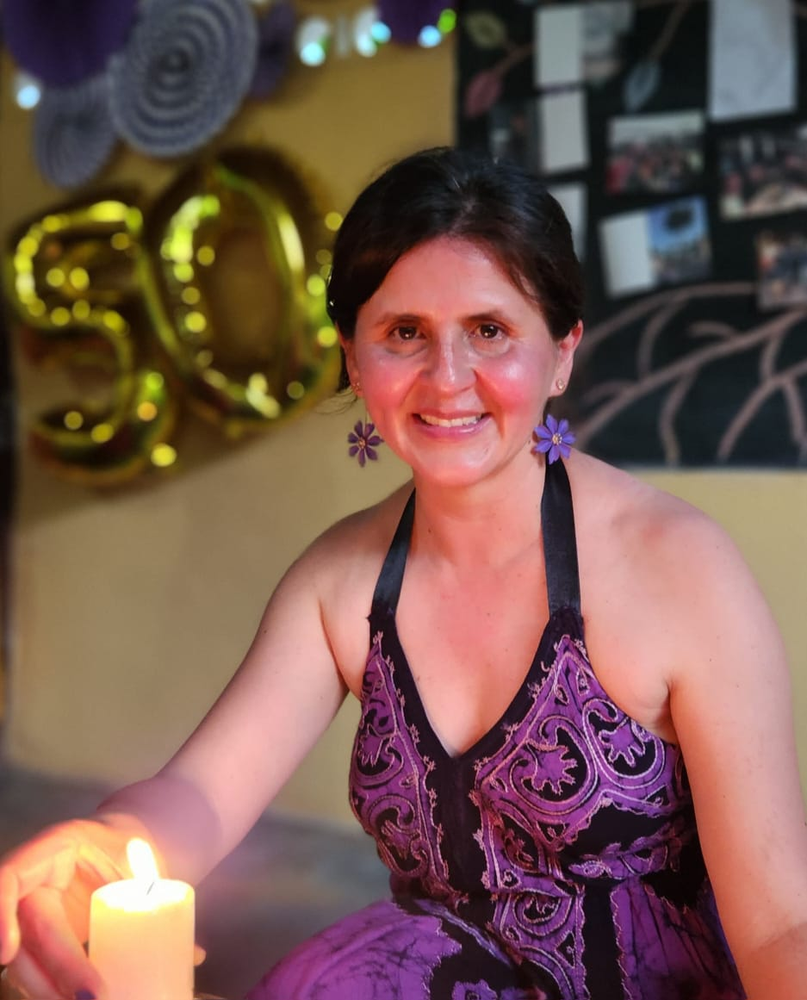

Testimonios
Voces del Camino
Mis sesiones con Nicolás se han convertido en espacios profundamente valiosos en mi vida. Me han permitido explorar mis emociones, creencias y pensamientos, comprender mejor su origen y encontrar estrategias reales para vivir con mayor tranquilidad, conciencia y presencia.
Estos espacios me han ayudado a mirar mi historia con más amor, compasión y honestidad, reconociendo tanto los desafíos como los avances en mi camino de crecimiento personal y amor propio. En ese recorrido, Nicolás se ha convertido en un observador honesto y un guía respetuoso que me ha acompañado a conocerme mejor, descubrir nuevas perspectivas y conectar con la madre, mujer y ser humano que quiero seguir construyendo cada día.

~ respira ~
Agenda una conversación